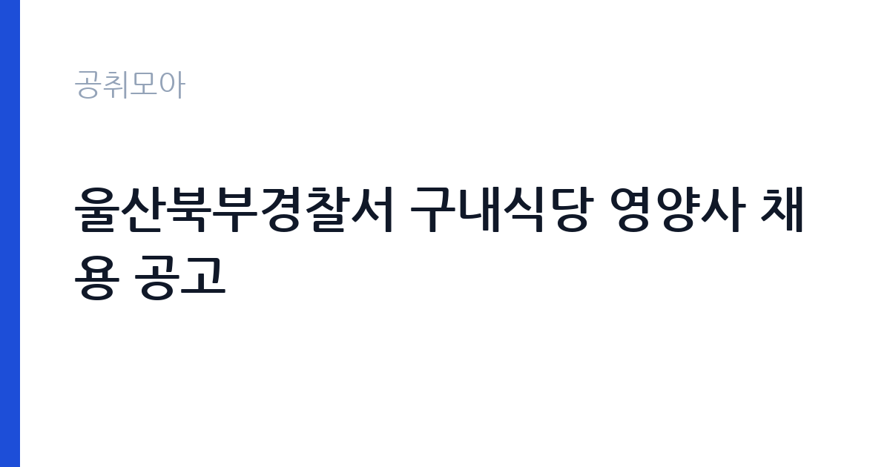

[국가기관] 울산북부경찰서 구내식당 영양사 채용 공고
경찰청 울산광역시경찰청 울산북부경찰서 · 울산 · 마감 2026-11-11 (D-12) · 출처 나라일터

한눈에 보는 모집 조건
| 기관 | 경찰청 울산광역시경찰청 울산북부경찰서 |
|---|---|
| 공고명 | 울산북부경찰서 구내식당 영양사 채용 공고 |
| 고용형태 | 기간제 |
| 근무지 | 울산 |
| 게시일 | 2026-10-30 |
| 마감일 | 2026-11-11 (D-12) |
지원자격, 이렇게 읽으세요
- 영양사 1명
- 접수 ~2026-11-11 마감
- 세부 조건은 원문 공고문 확인
기간제 근로자는 근로계약 기간이 정해진 신분입니다. 계약 기간과 갱신 가능 여부가 근로계약서에 명시되며 기간 만료 시 근로관계가 종료됩니다. 결원 보충이나 특정 사업 기간에 맞춰 채용되는 경우가 많아 업무 범위가 명확합니다. 이번 공고는 경찰청 울산광역시경찰청 울산북부경찰서에서 직접 진행하는 자체 전형으로, 응시자격과 제출서류는 공고문에 항목별로 제시됩니다. 영양사자격증 보유자가 요건이고 경력자는 우대합니다. 접수는 2026년 10월 30일부터 11월 11일까지이며, 우편·직접 방문 또는 이메일로 제출합니다. 방문 접수처는 울산시 북구 화동로 67, 울산북부경찰서 경무계입니다. 제출서류는 이력서와 개인정보 제공 동의서 등이며 세부 목록은 첨부파일을 기준으로 확인해야 합니다. 급식 인원이 정해져 있어 단독으로 운영을 맡는 구조인지 확인하는 것이 좋습니다. 서류는 접수 마감 이후 보완이 되지 않으므로 자격 요건과 증빙 서류를 마감 전에 모두 갖춰야 합니다. 공고문에 명시된 우대 사항은 해당 여부를 확인해 증빙을 첨부해야 가점이 반영됩니다. 자격 취득 예정자는 채용 공고의 예정자 허용 조항을 먼저 확인해야 합니다. 조항이 없으면 지원 자체가 반려될 수 있습니다.
이 공고의 포인트
이 공고의 첫 번째 포인트는 고용 형태입니다. 계약 기간이 정해져 있어 근무 종료 시점이 명확합니다. 그만큼 짧은 기간에 어떤 실적을 남길지가 중요해집니다. 두 번째는 업무 범위가 명확하다는 점입니다. 구내식당 영양사 직무로 채용되므로 배치 이후 담당 업무가 크게 흔들리지 않습니다. 세 번째는 근무지입니다. 울산 지역 근무로 수도권 공고에 비해 지원자 분포가 넓지 않아 상대적으로 경쟁이 분산되는 경우가 있습니다. 근무 조건이 공고문에 구체적으로 적혀 있어 지원 전에 판단할 정보가 충분합니다. 다만 선발 인원이 1명으로 많지 않아 자격을 갖춘 지원자가 몰리면 경쟁률이 높아질 수 있습니다.
전형은 어떻게 진행되나
서류전형과 면접전형 외에 직무수행능력 평가가 붙는 경우가 있습니다. 평가 방식은 공고문에 구체적으로 적혀 있으므로 어떤 항목에 배점이 높은지 먼저 파악하십시오. 면접에서는 지원 동기보다 실제 업무 경험에 대한 질문이 많고, 답변의 구체성이 평가를 가릅니다. 전형 일정은 서류 마감 이후 빠르게 진행되므로 연락 가능한 번호를 정확히 기재하고 문자와 메일을 수시로 확인해야 합니다. 최종 단계에서는 결격사유 조회와 신체검사가 진행됩니다. 서류 단계에서 요건을 충족하지 못하면 이후 전형을 준비할 기회가 없으므로, 제출 전 요건 대조를 한 번 더 하는 것이 좋습니다.
원문에서 확인한 전형 방식
○ 모집분야 : 영양사 ○ 고용형태 : 기간제 ○ 자격요건 : 영양사자격증보유자, 경력자 우대 ○ 접수기간 : 2026년10월30일 ~ 2026년11월11일 ○ 응시방법 : 이력서 및 개인정보제공동의서 등 제출 ※첨부파일 참고 - 우편 및 직접 방문 : 울산시 북구 화동로 67, 울산북부경찰서 경무계 - 이메일 : monkeyhj92@police.go.kr ○ 문의처 : 052-240-4307
이런 분께 추천해요
- 영양사 자격증을 보유한 분
- 급식 식단 구성과 위생 관리 경험이 있는 분
- 이메일·방문 접수로 기한 내 서류를 제출할 수 있는 분
지원 전 체크리스트
- 응시자격 요건과 경력 기준을 충족하는가 — 경력은 증명서로 입증해야 합니다
- 계약 기간과 근무 시작일·종료일을 확인했는가
- 제출서류 목록을 모두 준비했는가 — 누락 시 서류 단계에서 탈락합니다
- 접수 마감 2026-11-11 이전에 접수 방식을 확인해 제출했는가
모집 일정과 제출 타이밍
공고 게시일은 2026-10-30, 접수 마감은 2026-11-11입니다. 준비 기간은 약 12일로 서류 준비와 자격 증빙을 함께 처리하기에는 넉넉하지 않은 편입니다. 첫 이틀 안에 공고문과 첨부 서식을 내려받아 요건을 확인하고 남은 기간에 증빙 서류를 발급받는 일정이 현실적입니다. 면접은 서류 합격자 발표 후 짧은 간격으로 진행되는 경우가 많으므로 서류 제출과 동시에 면접 준비를 시작하는 편이 안전합니다. 마감일에는 접수 시스템이 몰리므로 하루 전까지 제출을 마치는 것이 좋습니다. 접수 첫날에 몰리면 시스템 접속이 지연될 수 있으므로 오전 시간대 제출이 안전합니다. 울산 근무지는 산업 시설 인접 지역이 많아 교대 근무 여부를 함께 확인해야 합니다. 마감까지 2주 안팎이 있어 준비할 시간은 있지만 미루면 촉박해집니다. 선발 인원이 한두 명 수준이라 지원자 개개인의 서류 완성도가 그대로 평가에 반영됩니다.
직무 이해하기: 국가기관
경찰청과 일선 경찰서는 치안 유지와 수사, 교통 관리, 민원 접수를 담당하는 국가기관입니다. 경찰서에는 경무·생활안전·수사·교통 같은 기능별 부서가 있고, 청사방호·시설관리·구내식당 운영 같은 지원 업무는 무기계약직이나 기간제로 채용합니다. 근무지는 각 경찰서 청사이며, 교대 근무나 당직이 포함되는 자리가 있습니다. 신원조회와 보안 서약 절차가 일반 기관보다 엄격합니다. 경찰서 구내식당 영양사는 직원 급식의 식단을 계획하고 영양 관리와 위생 점검을 맡습니다. 하루 식단을 구성하고 식재료 발주와 검수, 조리 과정의 위생 관리, 배식과 잔반 관리까지 급식 운영 전반을 담당합니다. 식중독 예방을 위해 냉장·냉동 온도와 조리 기구 소독 상태를 기록하고 보관식품을 관리합니다. 근무 인원과 예산에 맞춰 원가를 계산하고 식단표를 게시합니다. 근무 형태는 원문에 기간제로 표시되어 있습니다. 업무는 혼자 처리하기보다 부서 단위로 나눠 진행되므로 담당 구역과 협업 범위를 입사 초에 확인하는 것이 중요합니다. 현장 업무와 사무 업무의 비중은 기관의 사업 일정에 따라 계절별로 달라집니다.
자기소개서 작성 팁
지원서는 급식 운영 경험을 규모와 함께 쓰는 것이 효과적입니다. 하루 몇 명분의 식단을 운영했는지, 위생 점검에서 어떤 지적을 받아 어떻게 개선했는지 구체적으로 제시하십시오. 원가 관리나 식재료 발주 경험은 실무 연관성이 높습니다. 기간제 채용이라는 조건을 인정하고 근무 기간 동안 안정적으로 운영하겠다는 의지를 밝히십시오. 문항별 글자 수 제한을 먼저 확인하고, 각 문항의 첫 문장에 결론을 배치하는 방식이 읽기 쉽습니다. 지원 동기는 기관의 어떤 사업에 기여하겠다는 한 문장으로 시작하고, 이어서 본인의 경험을 근거로 붙이십시오. 감점을 피하려면 다른 기관에 보낼 수 있는 범용 문장을 그대로 쓰지 않는 것이 중요합니다. 기관 이름과 사업명이 문장 안에 자연스럽게 들어가야 준비도가 드러납니다.
면접 준비 포인트
면접에서는 위생 관리와 식단 운영 능력을 확인합니다. 식단을 어떤 기준으로 구성하는지, 식재료 검수에서 문제를 발견하면 어떻게 처리하는지, 원가를 어떻게 맞추는지 묻습니다. 조리 인력과 역할을 어떻게 나눌지에 대한 질문도 나옵니다. 급식 인원과 조리 시설 규모를 미리 파악해 가면 답변이 구체적으로 나옵니다. 답변은 상황, 판단, 조치의 순서로 정리하면 전달이 분명해집니다. 모르는 질문에는 모른다고 밝히고 확인 방법을 제시하는 편이 억지 답변보다 낫습니다. 마지막에는 근무 의사와 함께 2026-11-11 이후 일정에 언제든 응할 수 있다는 점을 전달하십시오. 지원 기관의 최근 사업이나 조직 개편 내용을 확인해 두면 지원 동기 질문에서 차이가 납니다.
급여·근무조건 읽는 법
경찰청 울산광역시경찰청 울산북부경찰서의 구체적인 보수 수치는 이 공고 원문의 처우 항목과 보수표에서 확인해야 합니다. 공시 자료로 확인되지 않은 금액은 이 글에서 추정해 제시하지 않습니다. 알리오 2025년 결산 공시 기준 공공기관 전체 일반정규직 1인당 평균보수는 7,376만 9천원, 신입사원 평균초임은 4,031만 6천원입니다(무기계약직 미포함). 보건의료 지원직의 보수는 임용 형태에 따라 달라집니다. 한시임기제공무원은 국가공무원 또는 지방공무원 보수규정상 연봉등급제를 적용받고, 임용 기간과 연봉등급이 공고문에 명시됩니다. 기간제 근로자라면 기관 임금표에 따라 월급이 정해지며, 교대·당직 수당이 붙는 경우가 있습니다. 면허 수당과 특수 근무 수당 포함 여부를 원문에서 확인하십시오. 2026년 적용 최저임금은 시급 10,320원, 월 환산 2,156,880원(주 40시간·209시간 기준)입니다. 고용노동부 고시 제2025-47호로 확정된 금액입니다. 공고문에 금액이 제시되지 않은 항목은 원문 보수표나 처우 설명에서 확인해야 하며 확인되지 않은 수치는 쓰지 않는 것이 원칙입니다. 비교할 때는 월 급여뿐 아니라 상여·명절휴가비·복지포인트·초과근무수당까지 포함한 연간 총액으로 계산하십시오. 기간제라면 계약 기간 동안의 총액을, 무기계약이라면 호봉 상승과 정년까지의 누적 소득을 기준으로 판단하는 편이 정확합니다.
자주 묻는 질문
- 선발 인원은 몇 명인가요?
공고문 기준 1명입니다. 직종별로 인원이 나뉘는 경우가 있으니 모집분야 항목을 함께 확인하십시오. - 근무지는 어디인가요?
울산 지역의 경찰청 울산광역시경찰청 울산북부경찰서 소속 근무지입니다. 세부 주소와 출퇴근 조건은 원문 공고문에서 확인할 수 있습니다. - 보수는 얼마인가요?
채용 신분(기간제)과 기관 임금 규정에 따라 정해지며 구체적인 금액은 공고문 처우 항목에 제시됩니다. 금액이 공개되지 않은 경우에는 원문의 보수표를 확인하십시오.
함께 보면 좋은 공고
[국가기관] 테스트 — 마감 2026-11-11[국가기관] 국무조정실·국무총리비서실 전문임기제공무원 채용 변경공고 — 마감 2026-11-09[국가기관] 육군 전투지위훈련단 BCTP 예비역 장성관찰관(군단 ·사단선임, 군단작전지속지원) 채용 공고 — 마감 2026-11-09출처: 나라일터 공개정보를 바탕으로 공취모아가 정리한 안내글입니다. 모집 조건·일정은 변경될 수 있으니 지원 전 반드시 원문 공고문을 확인하세요. 본 글은 정보 제공용이며 합격을 보장하지 않습니다.